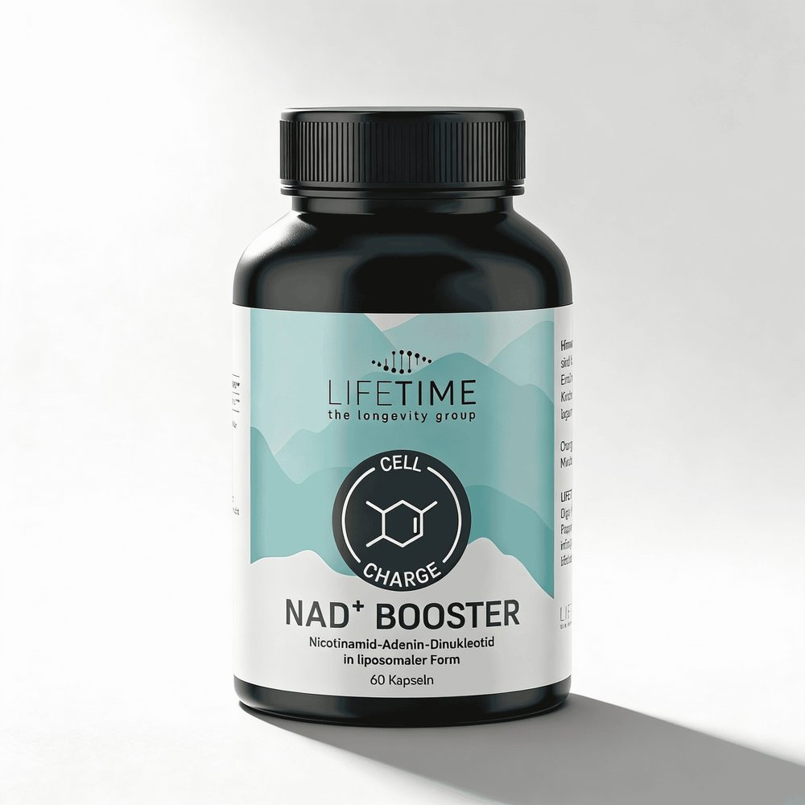
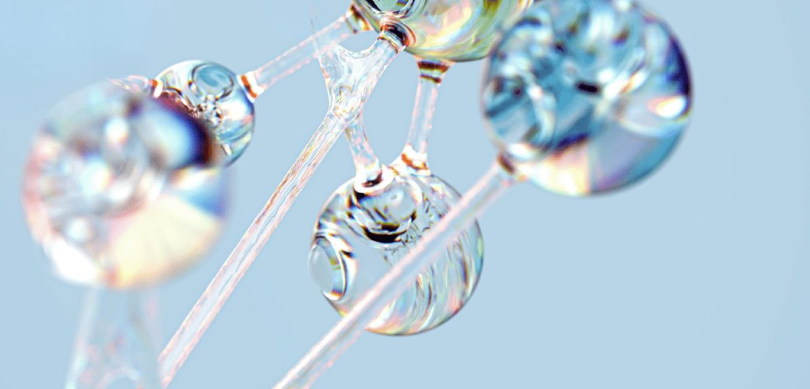
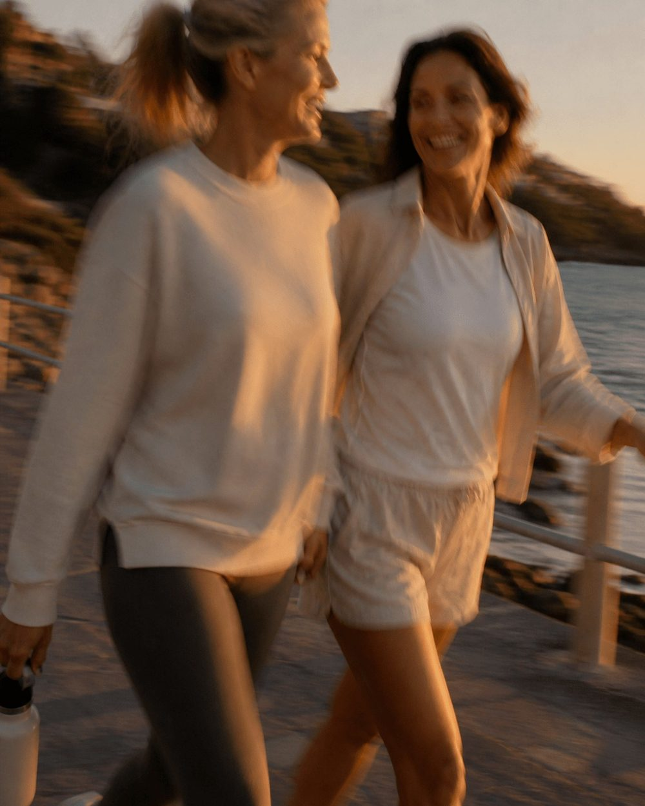

NAD⁺-PDP, Abschnitt für Abschnitt Welches Bild lässt die Käuferin am schnellsten einordnen, worum es geht und was es ihr bringt?
Links die Seite mit echten Bildern (Shopify-Dateien, lifetime-mockups/lifestyle) oder klar markierten Platzhaltern, rechts die Begründung. Reihenfolge nach der Denkschule-Runde: Wirkprinzip direkt hinter den Hero. Texte sind die aus der Vorschau, die Copy macht die Sitzung nad-pdp-vorschau. Stand 05.11.2026, nichts davon ist im Theme.
| Abschnitt | Bild heute | Bild neu | Grund |
|---|---|---|---|
| Hero: Galerie | 6 Bilder, 4 davon mit eingebranntem Text, junger Läufer, Eurofins- und Illumina-Logos | 5 Bilder ohne Text: Dose · Ritual am Küchentisch · zwei Kapseln in der Hand · Frau um 50 in Bewegung · Etikett | Jedes Bild ein Gedanke, mobil lesbar, die Käuferin sieht sich selbst statt eines 30-jährigen Läufers |
| Hero: Kaufzone | „90 Tage Geld zurück“ als kleiner Link unter dem Knopf | Zwei Zusagen als Kacheln mit Symbol direkt unter dem Knopf, Garantie betont | Das Risiko fällt genau dort weg, wo sie zögert |
| Wirkprinzip | Liposomen-Grafik mit eingebranntem Werbetext | Einblendung: Frau um 50 zu Hause, darüber Glaskarte „−60 %“ mit zwei Balken (Massudi 2012) | Eine Zahl, die zu ihrem Alter passt, ersetzt drei Absätze Biochemie |
| Belege: Was drin ist | nur Zahl „500 mg“ | Zahl plus freigestellte Kapseln, „2 Kapseln am Tag“ | Die Menge wird greifbar: so sieht die Tagesportion aus |
| Belege: Die Form | nur Wort „Liposomal“ plus Limmroth | textfreier Ausschnitt der Liposomen-Kugeln, später warmes Makrofoto | „Liposomal“ ist ein Fremdwort, das Bild erklärt die Hülle ohne Satz |
| Belege: Kunden | Sterne, 4,8 | bleibt | Die Zahl ist das Bild, Gesichter wären erfunden |
| Loox-Lade | Link | kein Bild | Reiner Ausgang, ein Bild würde nur verzögern |
| Produktfakten | nur Text | Etikett als Foto zum Vergrößern, Einnahme als kleines Piktogramm | Belegt „das steht wirklich auf der Dose“, die Einnahme liest man in einer Sekunde |
| FAQ | kein Bild | kein Bild | Wer hier ist, sucht eine Antwort, kein Gefühl |
| Abschluss-Leiste (neu, optional) | fehlt | Leiste nach Wispr Flow: dunkles Teal, verwischte Frau in Bewegung, Knopf | Mobil ist der Kaufknopf nach dem FAQ zehn Bildschirme weit weg |
Offene Bildwünsche, müssten neu erzeugt werden (erst nach deinem Ja)
- Ritual am Küchentisch (Galerie 2, ersetzt die grobe Montage): Frau Anfang 50 morgens am Holztisch, Halbprofil, Kaffee und Frühstück, die NAD⁺-Dose steht scharf im Vordergrund, eine Hand nimmt zwei Kapseln heraus. Stil wie
ki-kueche-handy-b, Dose als Vorlagedose-frei.pngmitgeben, kein Text, keine fremden Marken. 1:1 und 4:5. - Zwei Kapseln in der Hand (Galerie 3): Nur Hand und Unterarm, Handfläche offen, zwei weiße Kapseln, warmer Hellgrau-Grund
#f2f1ed, Tageslicht seitlich. Am besten echtes Foto mit dem Handy (5 Minuten), KI nur als Notlösung. 1:1. - Liposom warm (Belege: Die Form, ersetzt den kalten blauen Ausschnitt): Makro einer geöffneten Kapsel mit Pulver auf beigem Grund oder ein einzelnes Glas-Kügelchen in Mint, ein Objekt, viel Luft, nach AG1-Typ „Forschung im Makro“. Kein Text. 2:1.
Beim Sichten aufgefallen
- Galerie Bild 5 („Qualitätsversprechen“) zeigt die Logos von Eurofins und Illumina. Beide gehören zum AGE&DNA-Test, nicht zu NAD⁺. Auf einer Supplement-PDP liest sich das als Laborprüfung des Pulvers. Raus.
- Galerie Bild 3 sagt „Laborgeprüft“, Bild 2 „deutlich höhere zelluläre Aufnahme“. Beide Aussagen hat der Refit gerade aus der Copy genommen, weil kein Prüfbericht vorliegt. Raus.
- Etikett (Galerie 6) trägt die Anschrift Pappelallee 78, Berlin. Hausregel ist „aus Köln“. Das ist das echte Etikett, also bleibt das Bild, aber in der Vergrößerung sieht man die Adresse. Neues Etikett oder bewusst stehen lassen: deine Entscheidung.
- Massudi 2012: r = −0,71 gilt nur für Männer (n = 19), bei Frauen ist es −0,54. Für eine Käuferin ist ein Korrelationswert keine Zahl. Tabelle 1 der Studie gibt die Gruppenmittel: 2,74 ng NAD⁺/mg Protein bei 30–50 Jahren (Mittel 41), 1,08 bei 51–70 (Mittel 63), also rund 60 % weniger. Hautgewebe, n = 12 und 23. Ob der Unterschied zwischen genau diesen zwei Gruppen signifikant ist, lässt sich aus dem Volltext-Export nicht lesen (Sternchen fehlen), im PDF prüfen. DOI
- PRODUCT.md sagt „kein weiteres Bildmaterial mit Menschen/Wirkversprechen“. Das stammt aus der Startseiten-Arbeit. Die Menschen hier zeigen Alltag, kein Vorher-Nachher und keinen Effekt des Produkts.
1 · Hero mit Galerie und Kaufzone
lt-pdp-hero, wie NMN
1 Dose frontal. Bleibt als Startbild: sie erkennt das Produkt, das sie aus der Anzeige kennt.
NAD⁺-Kapseln Liposomal, 500 mg am Tag
- NAD⁺ selbst, keine Vorstufe.
- Für den Energiestoffwechsel deiner Zellen.
2 · Wirkprinzip
lt-pdp-wirkprinzip, NEM-Teil, direkt hinter den HeroWas NAD⁺ in deinen Zellen macht Und warum der Spiegel mit dem Alter zählt.
- Energie
NAD⁺ wandelt Nährstoffe aus deiner Nahrung in Zellenergie um. Ohne NAD⁺ entsteht kein ATP, der Treibstoff jeder Zelle.
- Reparatur
Sirtuine und PARP-Enzyme, die an der Reparatur deiner DNA arbeiten, verbrauchen NAD⁺ als Rohstoff.
3 · Belege-Karten
lt-pdp-belege, wie NMN60 Kapseln reichen 30 Tage.
Ausschnitt vorhanden
NAD⁺ selbst, keine Vorstufe, aus der dein Körper es erst bilden muss.

Das NAD⁺ steckt in einer Hülle aus Phospholipiden, dem Grundstoff jeder Zellmembran.

Sehr hochwertiger Eindruck.
Alexander M. · Verifiziert · November 2025
Gut in die Routine integrierbar.
Silke D. · Verifiziert · Januar 2026
4 · Loox-Lade
lt-pdp-reviews-all, wie NMN5 · Produktfakten
lt-pdp-produktfakten, NEM-TeilZusammensetzung und Einnahme Zutaten, Gehalt und Verzehrempfehlung.
Gehalt pro Tagesportion
| Nicotinamidadenindinukleotid (NAD⁺) | 500 mg |
Einnahme
Zutaten
Phospholipide (aus Sonnenblumenlecithin), Nicotinamidadenindinukleotid (NAD⁺), Maltodextrin, Siliciumdioxid, Hydroxypropylmethylcellulose (Kapselhülle).
Die angegebene empfohlene tägliche Verzehrmenge darf nicht überschritten werden. Nahrungsergänzungsmittel sind kein Ersatz für eine ausgewogene und abwechslungsreiche Ernährung und eine gesunde Lebensweise. Außerhalb der Reichweite von kleinen Kindern aufbewahren. Kühl und trocken lagern sowie vor Licht schützen.
6 · FAQ
crs-faq-accordion, wie NMNHäufige Fragen
Wie funktioniert die Geld-zurück-Garantie?
Hält die erste Lieferung nicht, was wir beschreiben, gibt es 90 Tage lang den vollen Betrag zurück per E-Mail. Dein Widerrufsrecht bleibt unberührt.
Ist das NAD⁺ oder eine Vorstufe?
NAD⁺ selbst. Viele Produkte mit „NAD“ im Namen enthalten nur eine Vorstufe, aus der der Körper NAD⁺ erst bilden muss.
Kann ich das Abo jederzeit kündigen?
Ja, im Kundenkonto, ohne Frist und ohne Anruf.
Sind die Kapseln vegan?
Ja. Die Kapselhülle ist pflanzlich, die Phospholipide stammen aus Sonnenblumen.
7 · Abschluss-Leiste
neu, optional, NMN hat sie nicht